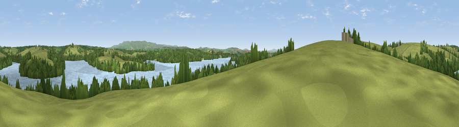

Viewpoint near Germansweek
#19953 in England · top 38% of its area beats it · near GermansweekWhere it is
The exact computed spot (SX 42225 92175). Click the marker for map links.
The view, rendered

A 360° render of this exact spot computed from the terrain model, tree cover and land cover — summer colours, afternoon light, calibrated against photographs of famous viewpoints. Real trees, hedges and buildings will differ in detail.
The panorama
Grey silhouette: terrain skyline in each direction (720 bearings, Earth curvature and refraction included). Dashed green: skyline with trees (+15 m) and buildings (+8 m) as obstacles. Blue strip: how far the ground is visible on each bearing.
Where the view opens
Wedge length = distance to the farthest visible ground on that bearing (vegetation-aware). Rings at 10, 25 and 50 km.
What fills the view
43% grassland · 36% water · 21% woodland ·
Angular shares of the visible panorama (visual magnitude), not map area. Landscape diversity 0.48 (0–1 Shannon).
Key numbers
More beautiful places nearby
The staircase of upgrades: each row has a higher view potential than everything closer. Driving times are estimates from straight-line distance, calibrated against real road routing — check an actual route before setting out.
| Place | Direction | Drive | Score |
|---|---|---|---|
| Viewpoint near Germansweek | NE · 2 km | ~6 min | 53.6 |
| Viewpoint near Beaworthy | NNE · 7 km | ~14 min | 57.3 |
| Viewpoint near Chapmans Well | W · 7 km | ~14 min | 57.4 |
| Viewpoint near Bratton Clovelly | ENE · 7 km | ~14 min | 60.9 |
| Viewpoint near Tinhay | SSW · 9 km | ~18 min | 61.3 |
| Viewpoint near Chillaton | S · 10 km | ~20 min | 63.4 |
| Viewpoint near Chillaton | S · 11 km | ~21 min | 65.2 |
| Sourton Tors | E · 12 km | ~23 min | 74.8 |
50.70775, -4.23588 · source: screening · position refined by local search. Computed location — check access rights before visiting.